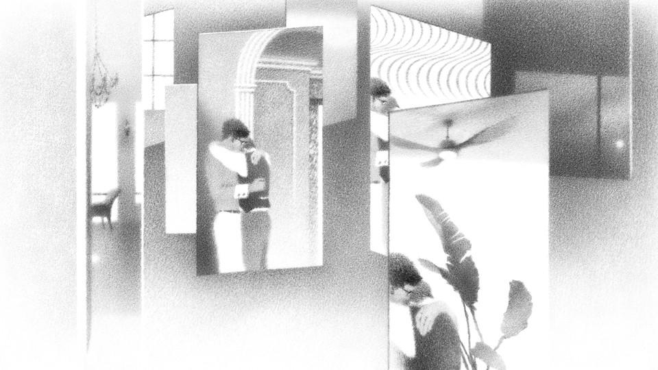

| 上一项 | 文章 | 章节 | 下一项 |
Fiction Meets Chaos Theory
Hanya Yanagihara’s new novel tweaks American history and traces the disorienting consequences.
by Jordan Kisner

While reading To Paradise, Hanya Yanagihara’s gigantic new novel, I felt the impulse a few times to put down the book and make a chart—the kind of thing you see TV detectives assemble on their living-room walls when they have a web of evidence but no clear theory of the case. To Paradise, which is in fact three linked novels bound in a single volume, is constructed something like a soma cube, with plots that interlock but whose unifying logic and mechanisms are designed to baffle. The first book, “Washington Square,” takes place in the early 1890s in a New York City that the reader quickly realizes is off-kilter. There the prominent Bingham family runs the primary bank of the Free States, one of a patchwork of nations (including the southern Colonies, the Union, the West, and the North) sustaining an uneasy coexistence after the War of Rebellion. In the Free States, homosexuality and gay marriage are perfectly ordinary, but Black people are not welcomed as citizens—the Free States are white, and committed only to giving Black people safe passage to the North and the West. David, the sickly grandson of the Bingham clan, falls in love with a poor musician named Edward, though his grandfather is attempting to arrange his marriage to a steady older man named Charles.
Book 2,“Lipo-Wao-Nahele,” also follows a David Bingham, this time a young Hawaiian man living with his older lover, Charles, in the same house on Washington Square owned by the Binghams in the previous book. David is a descendant of the last monarch of Hawaii, whose legacy is defended by a Hawaiian-independence movement. It is the 1990s, and AIDS is ravaging David and Charles’s world in New York, an erasure of a generation that is counterposed to David’s ambivalent denial of his homeland, his lineage, and his father—who narrates half the book.
Book 3, which, at nearly 350 pages, constitutes almost half of the entire novel, tells the story of a United States that slides into a totalitarian dictatorship in response to recurrent pandemics and climate disasters. “Zone Eight,” as it’s titled, unfolds from 2043 to 2094, again in Greenwich Village (now Zone Eight), and is narrated, alternately, by Charles, a Hawaiian-born virologist and influential adviser to the government, and Charlie, the daughter of Charles’s son, David. Charlie survived one pandemic as a child but lives with lasting neurological effects. These are, I promise, the barest possible bones of the trilogy.
Read: A Little Life: The great gay novel might be here
To Paradise, though its plots are too various and intricate to even begin to capture in summary, moves smoothly and quickly. Yanagihara’s previous novel, A Little Life, also a bulky page-turner, amassed critical praise and a near-frantic fandom on the strength of her gift for mapping deeply felt lives on an epic scale, and for dramatizing the way that people are driven, and failed, by their love for one another. To Paradise shares these qualities. Yet Yanagihara avoids the gratuitous violence and abjection that set the tone of A Little Life, a dark saga of four college friends who make their tormented way into middle age. To Paradise is a softer book, with a classic, almost old-fashioned set of plot arcs (a wealthy, fragile man is taken in by an opportunistic lover; a father longs for the son he alienated; utopian dreams produce a dystopia). It is executed with enough deftness and lush detail that you just about fall through it, like a knife through layer cake.
But what is Yanagihara doing with all these Davids and Charleses?
A few notes from my TV-detective chart: Characters called David, Charles, Peter, and Edward appear in all three books of the novel. Surnames repeat as well—though sometimes those who share surnames across centuries seem to be related, and sometimes not. Two of the books prominently feature Hawaii; all have butlers named Adams. All three are anchored by the same townhouse on Washington Square. Though the first and third books take place in a version of America that is notably speculative, it is not clear whether these alternative Americas are meant to be continuous, shared across the novel. Each book could just as plausibly be playing out its own version of history.
Two have powerful grandfathers who fail in their efforts to protect their legacy and their vulnerable grandchildren (often from themselves). All center gay men. All dramatize the horrors of illness, horrors that reverberate through generations. Two follow men whose frailty leads them to throw their life into the hands of untrustworthy men; a different two books are set amid plagues. Every book ends with the same phrase and the same image: a character reaching out to someone else through time and space, willing or imagining their way “to paradise.” None seems to imagine paradise in quite the same way.
The further I read, the more I suspected that the challenge Yanagihara sets for the reader isn’t so much to decode a puzzle as to survive a plunge into chaos theory. The warped harmonies of the three plotlines seem engineered to reveal how ensnared humans are in inscrutable coincidences and consequences, how oblivious we are to the long arcs of causation. To Paradise evokes the dizzying way that minor events and personal choices might create countless alternative histories and futures, both for individuals and for society. Reading the novel delivers the thrilling, uncanny feeling of standing before an infinity mirror, numberless selves and rooms turning uncertainly before you, just out of reach.
The butterfly effect—an underlying principle of chaos theory—holds that tiny, apparently inconsequential changes can produce enormous, globally felt repercussions. The butterfly effect was formalized by the meteorologist Edward Lorenz, who noticed, while running data through his weather models, that even the seemingly insignificant rounding up or down of initial inputs would create a big difference in outcomes: A flap of a wing, as he once put it, would be “enough to alter the course of the weather forever.”
The challenge Yanagihara sets for the reader isn’t so much to decode a puzzle as to survive a plunge into chaos theory.
Yanagihara plays with shifts on different scales in the altered Americas that populate the novel. What if, after the Civil War, race and class had still been fulcrums of injustice and oppression in society, but sexuality had not? What if Hawaii declared independence, a jolt of a less systemic degree? What if, in the face of devastating pandemics, the American government prioritized virus containment and maximizing lives saved, forcibly isolating the ill and ignoring concerns about civil liberties and human rights? How much would have to change for the world to be different? What seemingly momentous changes would leave the world fundamentally the same?
In Book 2, David is struck, looking at his lover, Charles, by how partially they know each other, and how circumstantial their relationship is. He finds himself reflecting that “each of them wanted the other to exist only as he was currently experiencing him—as if they were both too unimaginative to contemplate each other in a different context.” His thoughts begin to spiral outward.
But suppose they were forced to? Suppose the earth were to shift in space, only an inch or two but enough to redraw their world, their country, their city, themselves, entirely? What if Manhattan was a flooded island of rivers and canals … Or what if they lived in a glittering, treeless metropolis rendered entirely in frost … ? Or what if New York looked just as it did, but no one he knew was dying, no one was dead, and tonight’s party had been just another gathering of friends.
These kinds of “what if”s haunt all three plot arcs. Story after story within each book focuses on missed gestures of care and thwarted intimacy: If the grandfather in Book 1 had shared his doubts about Edward earlier, would that have rescued or stifled David? What if the David in Book 2 had been honest about his family background when he moved in with Charles? What if the Charles in Book 3 had been gentler when David got in trouble at school? Would their relationship have retained the possibility of repair? What if Charlie had told her Edward, the husband she acquired in an arranged marriage, that she loved him? Again and again, the question arises: What if this or that interchange had gone just a little differently? What swerve might have followed? What could have been saved?
The book that grapples most directly with this torturous uncertainty is “Zone Eight.” It is written, in part, as letters from the scientist Charles Griffith to a friend and colleague named Peter over nearly five decades, updating Peter on his life—an account interwoven with his granddaughter, Charlie’s, narration of a year of her adult life, after Charles’s death. We meet Charles first as a young husband and father who has accepted a position at a prestigious lab in New York. His husband resents the move, but Charles feels he can do good at this new lab, which is engaged in the crucial work of anticipating and preventing pandemics. As his son grows up, as Charles and his husband grow apart, as global pandemics grow more dire, the reader begins to see in Charles’s letters the incremental nature of disaster.
His decisions—to collaborate with the government, to avoid confronting his son in an argument, to behave poorly at a dinner—are barely noticeable in the course of the weeks and months that his letters relate. But slowly, they accumulate into something all wrong. Many years into the correspondence, when the United States has become a totalitarian regime that Charles—trying to save lives—helped build, and when the islands around Manhattan serve as brutal internment camps for the ill, he confesses to his friend: “I have always wondered how people knew it was time to leave a place, whether that place was Phnom Penh or Saigon or Vienna.” He knows he has missed his window to escape the state he played a part in creating.
I had always imagined that that awareness happened slowly, slowly but steadily, so the changes, though each terrifying on its own, became inoculated by their frequency, as if the warnings were normalized by how many there were. And then, suddenly, it’s too late. All the while, as you were sleeping, as you were working, as you were eating dinner or reading to your children or talking with your friends, the gates were being locked, the roads were being barricaded, the train tracks were being dismantled, the ships were being moored, the planes were being rerouted.
At every step, Charles writes, he was trying to do the right thing. But “I made the wrong decisions, and then I made more and more of them.” That some of those missteps led to the devastation of his family, the transformation of Roosevelt Island into a crematorium, the supplanting of neighborhoods by militarized zones—and ultimately to a generation of children who can remember neither the internet nor civil liberties—is harder to contemplate, because this man is a normal enough man, a concerned scientist. As he made his decisions, none of them seemed to hold the potential for fatal error.
Small choices leading to unforeseen consequences are a conventional feature of fiction, but Yanagihara’s execution of this trope feels compelling and chilling because Charles’s world is so plausibly near to our own possible future. We, too, live in a world rocked by pandemics and storms, well aware that more are coming. We, too, live in a country that is vulnerable to authoritarianism. Charles arrives in New York in the early 2040s, and the setting looks reasonably like the New York of today. What apparently insignificant choices are we making, or not making, that will determine the disasters—or disasters averted—of our future? What vital relationships are in the balance at school pickup? Yanagihara taps into the anxieties of a moment crowded with warnings about apocalypses that might be narrowly avoided if we (who?) take action (what action?) now. One has the feeling, as an American in 2021, of being both the butterfly and the storm.
Yanagihara’s feat in To Paradise is capturing the way that the inevitable chaos of the present unrolls into the future: It happens on both global and intimate levels, always. The potential and kinetic energies that drive massive political shifts are also at work within the private push and pull of a marriage, between generations. The nature of energy is not to appear and disappear; it simply transfers. That invocation of continuity and possibility can sound hopeful, but here it is also daunting, entrapping. No matter what century, no matter which shifting variables—no matter how compellingly we spin stories out of uncertainties—chaos (the chaos of love, of crisis, of injustice, of alienation) is inescapable, uncontrollable. In the novel, as in life, humans are both the architects and the refugees of that chaos, determined to pursue meaning and connection no matter how impossible we have made that pursuit.
“For just as it was the lizard’s nature to eat, it was the moon’s nature to rise, and no matter how tightly the lizard clamped its mouth, the moon rose still,” goes a fable that Charles relays in Book 3, one he learned from his grandmother, who learned it from her grandmother. The voracious lizard in the tale consumes everything on Earth until there is nothing left, and then he eats the moon. But the moon rises inexorably and the lizard, unable to contain it any longer, explodes. “The moon burst forth from the earth and continued its path.”
“We are the lizard, but we are also the moon,” Charles writes. “Some of us will die, but others of us will keep doing what we always have, continuing on our own oblivious way, doing what our nature compels us to, silent and unknowable and unstoppable in our rhythms.”
This article appears in the January/February 2022 print edition with the headline “Hanya Yanagihara’s Haunted America.”
This article was downloaded by calibre from https://www.theatlantic.com/magazine/archive/2022/01/to-paradise-hanya-yanagihara-haunted-america/620851/
| 上一项 | 文章 | 章节 | 下一项 |